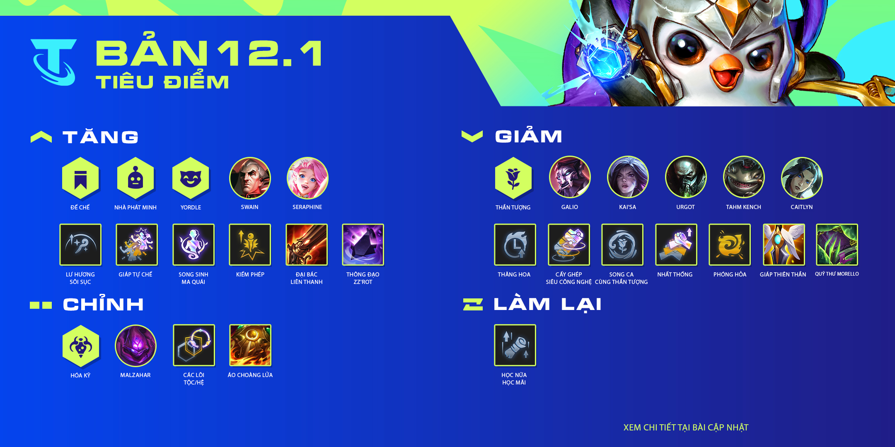

Kiến thức - Kinh nghiệm - Hỏi đáp
Lõi Nâng Cấp Cùng với những thay đổi lớn về các Lõi Nâng Cấp trong Phiên Bản 11.24, chúng tôi sẽ có thêm một vài cải thiện chất lượng . Nếu bạn không rảnh tay để bấm vào xem lại các phiên bản cập nhật cũ thì cũng không sao . Mục tiêu ở đây là tăng chất lượng của các lõi liên quan đến tộc hệ bằng cách kết hợp chúng với tướng, vàng, hoặc ấn miễn phí. Trong những phiên bản tiếp theo, chúng tôi sẽ ổn định các lõi nâng cấp này , với một vài nâng cấp mạnh như Trái Tim Hộ Vệ hay Trái Tim Đột Biến.
Cùng với những thay đổi này, chúng tôi cũng hướng đến việc giảm dần khoảng cách giữa những lõi tốt nhất và những lõi tệ nhất. Trong đó, đáng chú ý là các Học Giả sẽ nhận được sức mạnh từ Học Nữa Học Mãi dù cho có thắng hay là thua (bạn biết đấy, thất bại là mẹ thành công mà).
Hãy cùng nhau nhìn lại hành trình đầy khó khăn của Luffy và những người bạn anh đi cùng con tàu có tên "Sunny" trên con đường chạm đến ước mơ làm Vua hải tặc đầy thử thách.
Tối ngày 10 tháng 12 năm 2020, Vũ. chính thức tung ra MV mới mang tên "Bước qua mùa cô đơn", đánh dấu sự trở lại sau nửa năm vắng bóng.
LReav3 sẽ đem đến cho bạn những thông tin về các tướng mới và dự án Cập Nhật Tướng trong 2022—và dĩ nhiên, Zeri , Xạ Thủ chủ lực với sức mạnh Điện Năng cực chất.
Netflix Festival Japan 2021 là sự kiện đang Netflix tổ chức vào ngày 9/10/2021. Netflix đã hé lộ thêm về dàn cast chính thức của One Piece bản Live-action.
ASM WEB1013 là Assignment môn xây dựng website
Điện thoại: 0376764289
Email: myntps24785.fpt.edu.vn